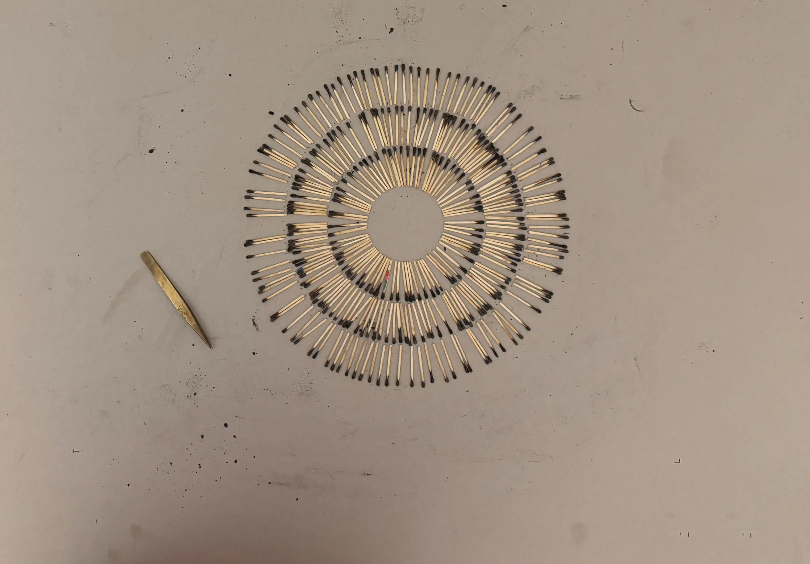
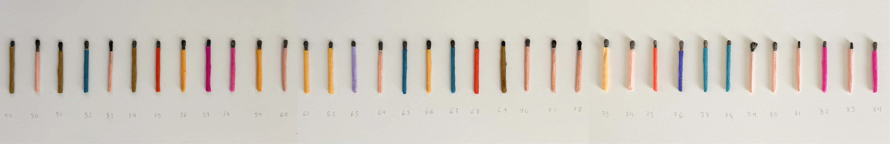
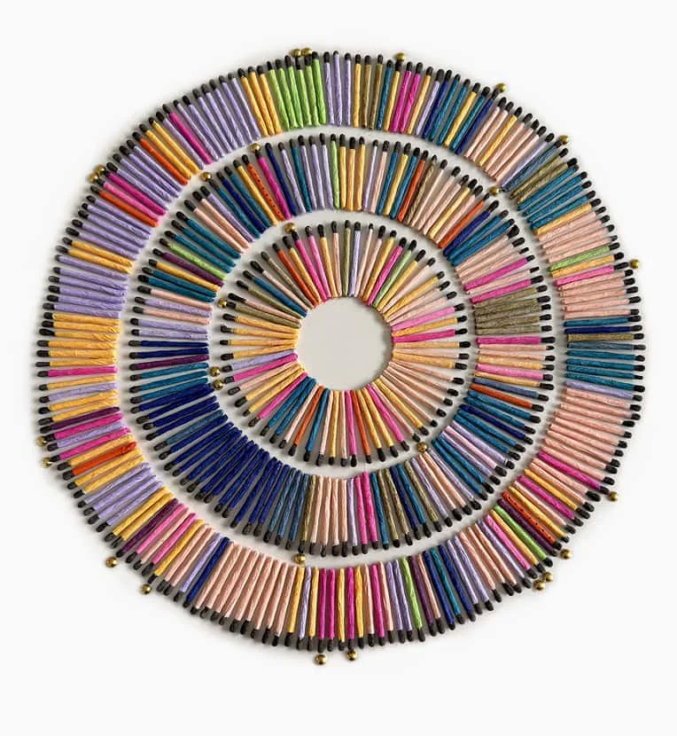
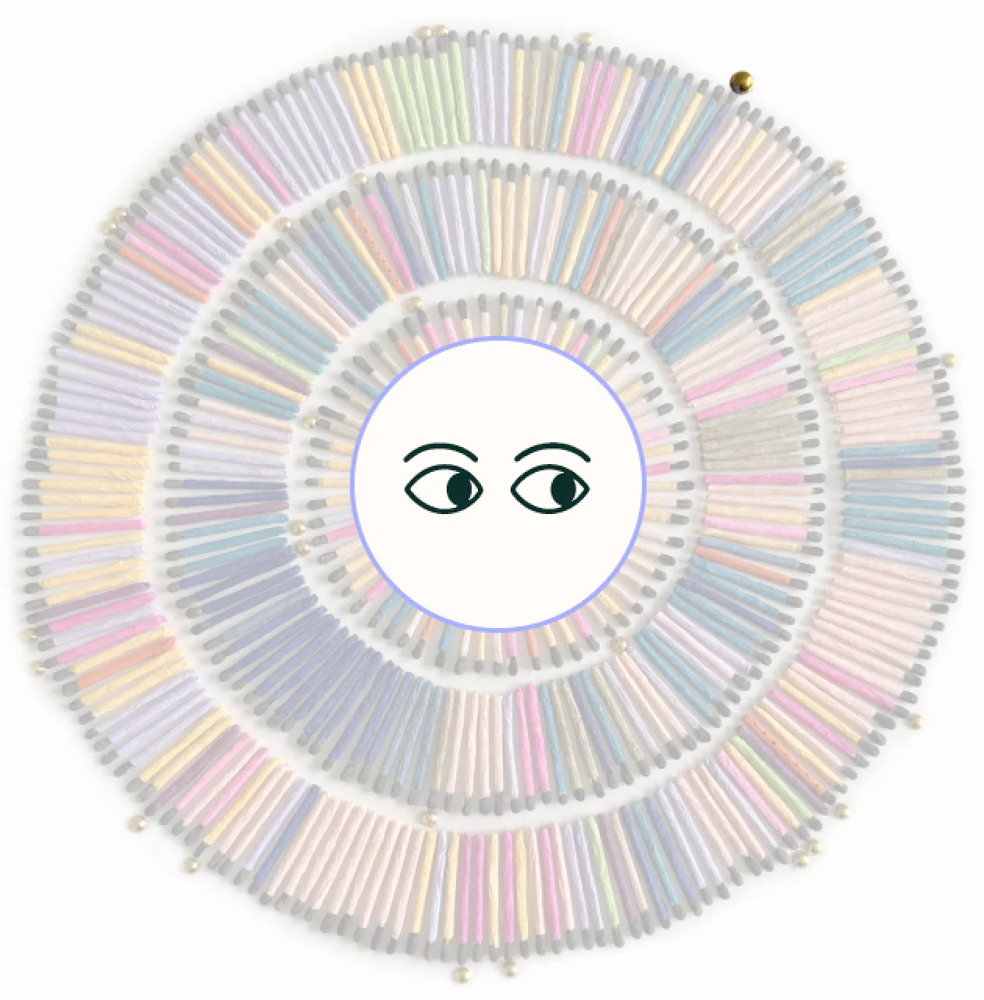

EVERY DAY IS A GIFT You WILL Never Get Back.
A data physicalization and visualization about the universal pain of break ups, the fragility of mental health and the path to recovery and joy.
Or how I learned to view each day as a gift—no matter if it’s filled with joy, sadness, confusion, or chaos.
1Physicalizing
Emotions
The process behind the physicalization that represents 365 days of my emotional life during a challenging time. It tells the story of the materials I used and the creative decisions they inspired.

Physicalizing emotions /

This is the first layout of the 365 matches arranged in concentric circles. I used this image to create the foundation for the final physical representation.

I wanted to paint each match with colored stripes representing the emotions I felt each day, but I had to abandon the idea because it was too time consuming.

Instead
of painting the
MATCHES, I wrapped each
ONE AS a tiny gift.
That decision helped define the concept and gave its name to the project. What fascinates me about physicalizations is the virtuous feedback loop they create—where the material informs the concept, and the concept evolves through the process.

My working sessions unexpectedly became an extension of my meditation practice. They allowed for contemplation and required me to be fully present while reflecting on the past from a new perspective.


The task was emotionally challenging. But by working in silence—wrapping, photographing, and pasting each match—I created space for gratitude. I honored each day, no matter how painful or joyful, because each one brought me to the present moment.
Although matches may appear similar at first glance, each one is distinct, much like our days.

after 4
months of wrapping and pasting...
the physicalization was finished on april
6, 2025

hours spent
- Website
- 145
- 76.5%
- Physicalization
- 31
- 16.4%
- Wrapping matches
- 10.5
- 5.5%
- Stop Motion Animation
- 3
- 1.6%
- Total
- 189.5
- 100%
2The
Visualization
This interactive visualization complements the physicalization; it captures my journey throughout the year—before, during, and after the crisis. It also highlights some milestones and the first time I did certain things.
01
1 Jan - 11 Feb, 2024
Range Days 01 to 42
Duration 42 days
A Promising Year Ahead
The Visualization
1 Match 1 Day lived
INNER RING
1 Jan - 29 Feb, 2024 Range Days 01 to 60 Duration 60 days
MIDDLE RING
1 Mar - 30 Jun, 2024 Range Days 61 to 182 Duration 122 days
OUTER RING
30 Jun - 31 Dec, 2024 Range Days 183 to 366 Duration 184 days

1 Match 1 Day lived

01
1 Jan - 11 Feb, 2024
Range Days 01 to 42
Duration 42 days
A Promising Year Ahead